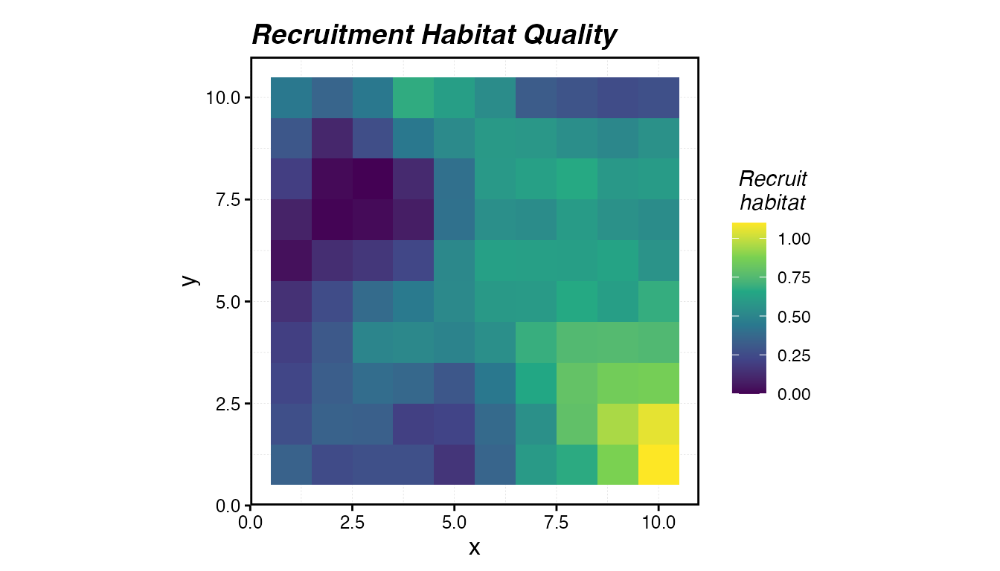
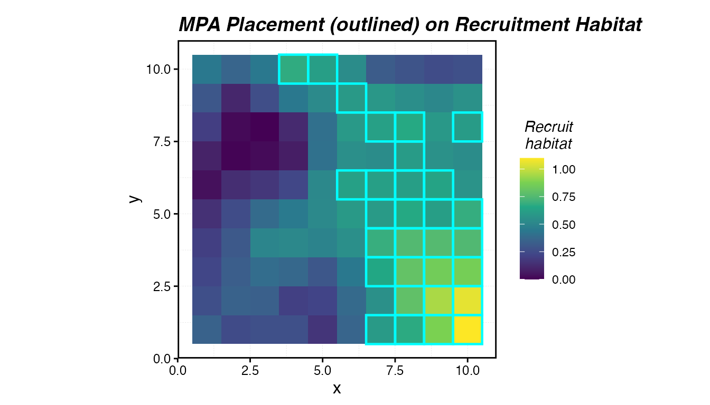
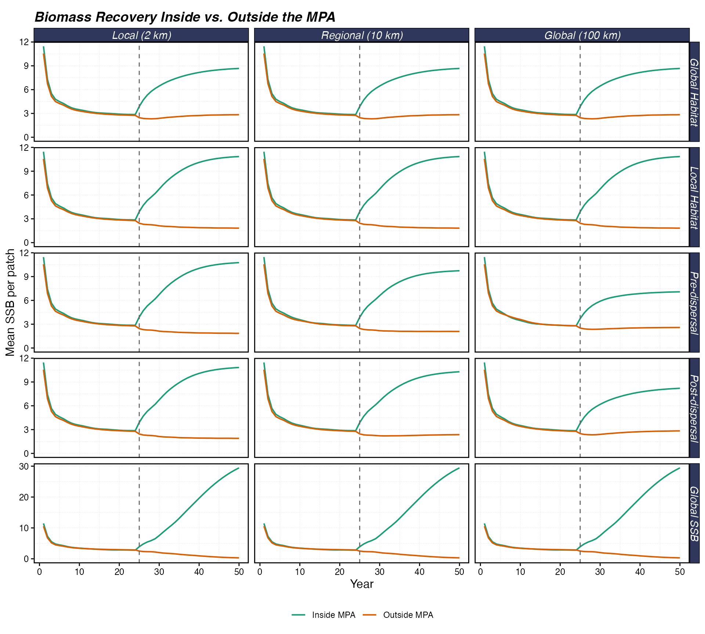
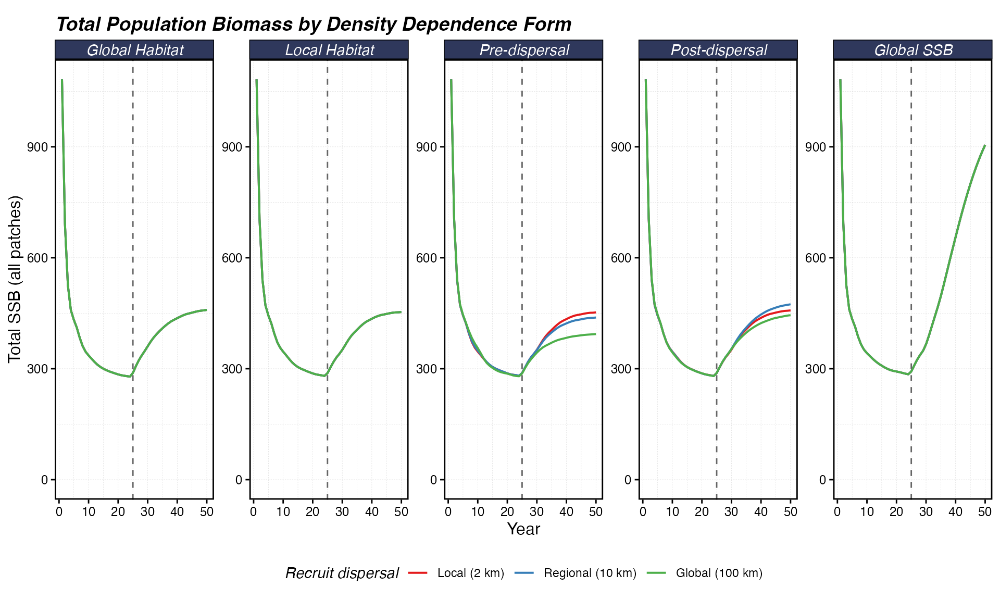
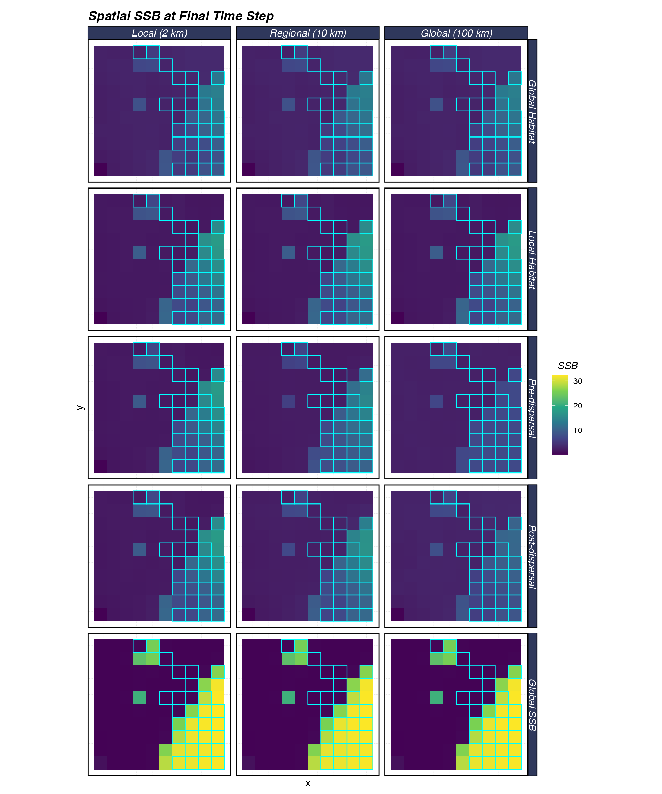
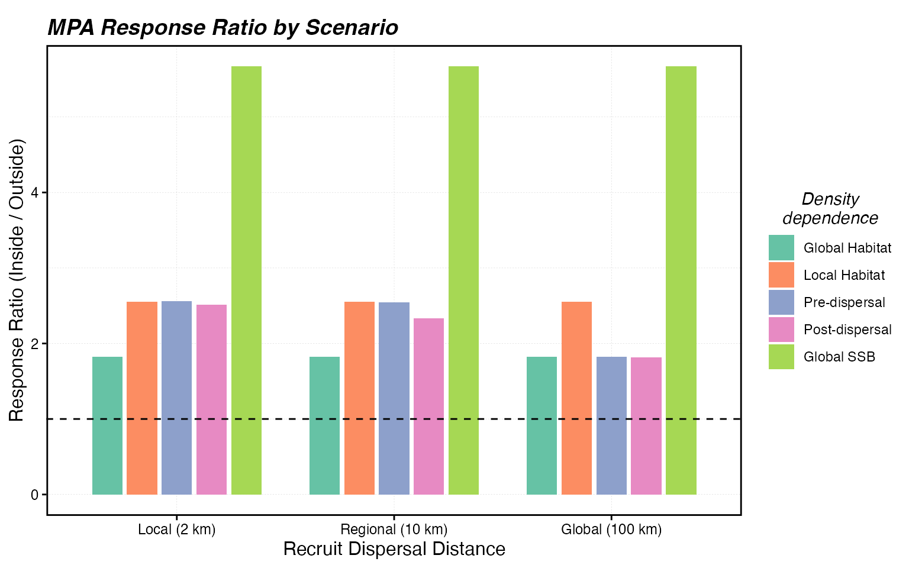
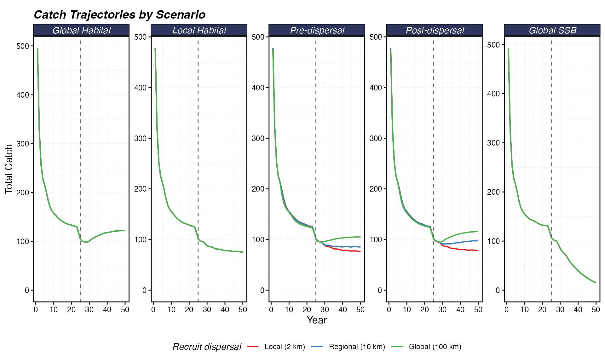

Recruitment, Dispersal, and MPA Performance
Source:vignettes/articles/recruitment-dynamics.Rmd
recruitment-dynamics.RmdMarine protected areas work by removing fishing mortality from a set of patches. But whether that local protection translates into population-wide benefits depends in part on recruitment: where new fish come from, how far larvae travel, and when density dependence kicks in relative to dispersal.
marlin implements five density dependence forms and
allows independent control of recruit dispersal distance. This vignette
isolates those mechanisms to show how they interact with MPA placement.
The setup deliberately holds adult movement and habitat constant so that
all spatial dynamics arise from the recruitment process.
Recruitment in marlin
All five recruitment forms in marlin are variants of the
Beverton-Holt spawner-recruit relationship, parameterized around
steepness
().
Steepness controls how sensitive recruitment is to spawning biomass:
when
recruitment is independent of SSB, and as
approaches 0.2 recruitment becomes a linear function of SSB. The forms
differ in where density dependence acts (globally vs locally),
when it acts relative to larval dispersal, and how
recruits are distributed across patches. Following Babcock and MacCall
(2011), we denote
as the unfished recruitment in patch
,
as spawning biomass in patch
at time
,
as unfished spawning biomass in patch
,
and
as a log-normal recruitment deviate.
is the recruit movement (dispersal) matrix derived from
recruit_home_range.
1. Global Habitat (global_habitat)
Density dependence operates on the total SSB summed across all patches. The resulting recruits are then distributed among patches in proportion to recruitment habitat quality ():
This form treats the entire domain as a single stock for the purposes
of the stock-recruit relationship. The spatial distribution of recruits
is determined entirely by habitat quality, not by where the spawners
are. Larval dispersal (recruit_home_range) has no effect
because recruit placement is set by habitat. This is appropriate when
larval connectivity is so high that the population is effectively a
single reproductive unit, and settlement patterns are driven by habitat
suitability rather than proximity to spawners.
2. Local Habitat (local_habitat)
Each patch has its own independent stock-recruit relationship. Density dependence is purely local, and recruits remain in the patch where they were produced:
This is the most spatially conservative form: what happens in a patch
stays in that patch from the perspective of recruitment. Each patch’s
carrying capacity is set by its own
and
.
As with global_habitat, recruit_home_range
does not affect the spatial distribution of recruits because they are
assigned to their home patch. This form is appropriate for sedentary
species with limited larval dispersal where local density dependence is
strong.
3. Pre-Dispersal (pre_dispersal)
Density-dependent competition occurs locally in the spawning patch, and then surviving recruits disperse according to the recruit movement matrix :
The competitive bottleneck is set by conditions at the origin patch.
pre-dispersal density dependence will all else being equal dampen the
effects of MPAs; as spawning biomass approaches carrying capacity inside
the MPA, the marginal benefits to recruitment will decrease, as density
dependent mortality of larvae will increase as the MPA fills up with
biomass, reducing the value of the MPA as a larval source beyond a given
point. recruit_home_range directly controls how far that
subsidy reaches — short dispersal keeps dispersal local, long dispersal
spreads them across the domain. This timing of density dependence might
be appropriate for spawning aggregations where density dependence
happens as a result of predator aggregations on large spawning
events.
4. Post-Dispersal (post_dispersal)
Larvae disperse first according to , and then density-dependent recruitment occurs at the destination patch based on the local SSB there:
The key distinction from pre-dispersal: competition is based on SSB at the settlement site, not the origin. All else being equal, this scenario will be more favorable to the ability of MPAs to act as larval sources. As biomass builds up inside the MPA, they produce more and more larvae. These larvae travel outside the MPA, where the amount that recruit depends on spawning biomass in the settlement patches, which are potentially outside the MPA. If fishing is heavy outside the MPA, driving spawning biomass well below carrying capacity, density dependent mortality will be low, so a the MPA can cause a large increase in recruitment in these fished patches. Larvae from a protected MPA patch disperse outward, but when they arrive at a fished (lower-SSB) destination they face the same density-dependent environment as locally-produced recruits. This could be a scenario where the key bottleneck in recruitment is available habitat at the time of settlement.
5. Global SSB (global_ssb)
Like global_habitat, density dependence operates on
total SSB across all patches. But instead of distributing recruits by
habitat quality, recruits are allocated in proportion to the spatial
distribution of SSB:
This creates a positive feedback: patches with more SSB receive more
recruits, which builds more SSB. An MPA amplifies this loop by
maintaining high local SSB, attracting a disproportionate share of the
system-wide recruitment. As with global_habitat,
recruit_home_range does not affect the spatial allocation
of recruits because placement is determined by the SSB distribution.
Recruitment deviates
Log-normal recruitment deviates are generated with optional autocorrelation:
where
is sigma_rec and
is ac_rec. Raw deviates are converted with a bias
correction to ensure the mean recruitment is unbiased in arithmetic
space. See the Working
with Recruitment Deviates vignette for more detail on controlling
stochastic recruitment.
Vignette Overview
With the recruitment equations in hand, we now demonstrate how these five forms interact with MPA placement and larval dispersal distance. We will:
- Build a system with uniform adult habitat but heterogeneous recruitment habitat
- Fish the population to 25% of unfished biomass
- Place an MPA over the best recruitment habitat
- Track patch-level recovery under all five density dependence forms and three levels of recruit dispersal
Setting Up the Seascape
We use a 10×10 grid with 10 km² patches (each patch is ~3.2 km on a side, total domain ~32 × 32 km).
Adult habitat is uniform everywhere: adults have no spatial preference and low home range, so they essentially stay where they are. This isolates the recruitment channel.
Recruitment habitat is spatially structured,
generated by sim_habitat with kp = 0.01 for
broad, smooth gradients. This creates a clear “good nursery” region and
a “poor nursery” region.
resolution <- c(10, 10)
patch_area <- 10 # km^2 per patch
years <- 50
mpa_year <- 25 # MPA introduced halfway through
seasons <- 1
time_step <- 1 / seasons
# Uniform adult habitat: no spatial preference for adults
adult_habitat <- matrix(1, nrow = resolution[2], ncol = resolution[1])
# Heterogeneous recruitment habitat
recruit_hab <- sim_habitat(
"species",
kp = 0.01,
resolution = resolution,
patch_area = patch_area,
output = "list"
)
recruit_habitat <- recruit_hab$critter_distributions$species
expand_grid(x = 1:resolution[1], y = 1:resolution[2]) |>
mutate(recruit_habitat = as.vector(recruit_habitat)) |>
ggplot(aes(x, y, fill = recruit_habitat)) +
geom_tile() +
scale_fill_viridis_c(name = "Recruit\nhabitat") +
coord_equal() +
labs(title = "Recruitment Habitat Quality")
Recruitment habitat quality across the seascape. Brighter colours indicate better nursery conditions.
Designing the MPA
We protect the top 30% of patches ranked by recruitment habitat quality. This represents an MPA placed deliberately over the best nursery grounds.
patches <- expand_grid(x = 1:resolution[1], y = 1:resolution[2]) |>
mutate(
patch = row_number(),
r_hab = as.vector(recruit_habitat)
)
mpa_threshold <- quantile(patches$r_hab, 0.7)
mpa_locations <- patches |>
mutate(mpa = r_hab >= mpa_threshold)
ggplot(mpa_locations, aes(x, y)) +
geom_tile(aes(fill = r_hab)) +
geom_tile(
data = filter(mpa_locations, mpa),
aes(x, y),
fill = NA, color = "cyan", linewidth = 0.8
) +
scale_fill_viridis_c(name = "Recruit\nhabitat") +
coord_equal() +
labs(title = "MPA Placement (outlined) on Recruitment Habitat")
MPA placement (teal) targeting the highest-quality recruitment habitat.
The Scenario Grid
We cross all five density dependence forms with three recruit dispersal distances:
-
recruit_home_range = 2: larvae settle within ~2 km (less than one patch width). Recruitment is essentially local. -
recruit_home_range = 10: larvae disperse ~10 km (~3 patches). Regional connectivity. -
recruit_home_range = 100: larvae spread across the entire domain. Recruitment is effectively global.
dd_forms <- c(
"global_habitat",
"local_habitat",
"pre_dispersal",
"post_dispersal",
"global_ssb"
)
recruit_ranges <- c(2, 10, 100)
scenarios <- expand_grid(
dd = dd_forms,
recruit_home_range = recruit_ranges
) |>
mutate(scenario_id = row_number())
scenarios
#> # A tibble: 15 × 3
#> dd recruit_home_range scenario_id
#> <chr> <dbl> <int>
#> 1 global_habitat 2 1
#> 2 global_habitat 10 2
#> 3 global_habitat 100 3
#> 4 local_habitat 2 4
#> 5 local_habitat 10 5
#> 6 local_habitat 100 6
#> 7 pre_dispersal 2 7
#> 8 pre_dispersal 10 8
#> 9 pre_dispersal 100 9
#> 10 post_dispersal 2 10
#> 11 post_dispersal 10 11
#> 12 post_dispersal 100 12
#> 13 global_ssb 2 13
#> 14 global_ssb 10 14
#> 15 global_ssb 100 15Running the Scenarios
Each scenario creates a fresh critter, tunes the fleet to achieve 25%
depletion, then runs a 50-year simulation with the MPA introduced at
year 25. We use sigma_rec = 0 to eliminate stochastic noise
and isolate the structural effects of density dependence and
dispersal.
run_scenario <- function(dd, recruit_home_range, scenario_id, ...) {
fauna <- list(
"species" = create_critter(
common_name = "bigeye tuna",
habitat = list(adult_habitat),
season_blocks = list(1),
recruit_habitat = recruit_habitat,
adult_home_range = 1,
recruit_home_range = recruit_home_range,
density_dependence = dd,
fished_depletion = 0.25,
seasons = seasons,
resolution = resolution,
patch_area = patch_area,
steepness = 0.6,
ssb0 = 1000,
sigma_rec = 0
)
)
fleets <- list(
"fleet" = create_fleet(
list(
"species" = Metier$new(
critter = fauna$species,
price = 10,
sel_form = "logistic",
sel_start = 1,
sel_delta = 0.01,
catchability = 0,
p_explt = 1
)
),
base_effort = prod(resolution),
resolution = resolution,
fleet_model = "constant_effort"
)
)
fleets <- tune_fleets(fauna, fleets, tune_type = "depletion")
sim <- simmar(
fauna = fauna,
fleets = fleets,
years = years,
manager = list(
mpas = list(
locations = mpa_locations,
mpa_year = mpa_year
)
)
)
proc <- process_marlin(sim, time_step = time_step)
# Tag results with scenario metadata
proc$fauna <- proc$fauna |>
mutate(
dd = dd,
recruit_home_range = recruit_home_range,
scenario_id = scenario_id
)
proc$fleets <- proc$fleets |>
mutate(
dd = dd,
recruit_home_range = recruit_home_range,
scenario_id = scenario_id
)
proc
}
results <- pmap(scenarios, run_scenario)Assembling Results
We combine all scenario outputs and classify each patch as inside or outside the MPA.
all_fauna <- map_dfr(results, ~ .x$fauna)
all_fleets <- map_dfr(results, ~ .x$fleets)
# Add MPA status to each patch
all_fauna <- all_fauna |>
left_join(
mpa_locations |> select(x, y, mpa),
by = c("x", "y")
)
# Nice labels for plotting
dd_labels <- c(
"global_habitat" = "Global Habitat",
"local_habitat" = "Local Habitat",
"pre_dispersal" = "Pre-dispersal",
"post_dispersal" = "Post-dispersal",
"global_ssb" = "Global SSB"
)
rhr_labels <- c(
"2" = "Local (2 km)",
"10" = "Regional (10 km)",
"100" = "Global (100 km)"
)
all_fauna <- all_fauna |>
mutate(
dd_label = factor(dd_labels[dd], levels = dd_labels),
rhr_label = factor(
rhr_labels[as.character(recruit_home_range)],
levels = rhr_labels
),
mpa_status = if_else(mpa, "Inside MPA", "Outside MPA")
)How Does SSB Recover?
The first key question: after the MPA is implemented, does biomass rebuild inside the MPA, and does any of that benefit spill over to fished areas?
We plot mean SSB (summed across ages) per patch over time, split by MPA status.
ssb_time <- all_fauna |>
group_by(dd_label, rhr_label, mpa_status, x, y, step) |>
summarise(ssb = sum(ssb, na.rm = TRUE), .groups = "drop") |>
group_by(dd_label, rhr_label, mpa_status, step) |>
summarise(
mean_ssb = mean(ssb, na.rm = TRUE),
.groups = "drop"
)
ggplot(ssb_time, aes(step, mean_ssb, color = mpa_status)) +
geom_line(linewidth = 0.7) +
geom_vline(xintercept = mpa_year, linetype = "dashed", color = "grey40") +
facet_grid(dd_label ~ rhr_label, scales = "free_y") +
scale_color_manual(
values = c("Inside MPA" = "#1b9e77", "Outside MPA" = "#d95f02"),
name = NULL
) +
scale_y_continuous(limits = c(0, NA)) +
labs(
x = "Year",
y = "Mean SSB per patch",
title = "Biomass Recovery Inside vs. Outside the MPA"
) +
theme(legend.position = "bottom")
Mean SSB per patch over time, inside vs. outside the MPA. The vertical dashed line marks MPA implementation at year 25. Rows show density dependence forms; columns show recruit dispersal distance.
Total Population Response
The MPA protects local biomass, but does the overall population benefit? This depends on whether the MPA creates a net recruitment subsidy (spillover via larvae) or simply redistributes existing production.
total_ssb <- all_fauna |>
group_by(dd_label, rhr_label, x, y, step) |>
summarise(ssb = sum(ssb, na.rm = TRUE), .groups = "drop") |>
group_by(dd_label, rhr_label, step) |>
summarise(total_ssb = sum(ssb, na.rm = TRUE), .groups = "drop")
ggplot(total_ssb, aes(step, total_ssb, color = rhr_label)) +
geom_line(linewidth = 0.7) +
geom_vline(xintercept = mpa_year, linetype = "dashed", color = "grey40") +
facet_wrap(~dd_label, scales = "free_y", ncol = 5) +
scale_color_brewer(palette = "Set1", name = "Recruit dispersal") +
scale_y_continuous(limits = c(0, NA)) +
labs(
x = "Year",
y = "Total SSB (all patches)",
title = "Total Population Biomass by Density Dependence Form"
) +
theme(legend.position = "bottom")
Total SSB across the entire domain over time. A rising trajectory after year 25 indicates the MPA produces a net population benefit; a flat line means only redistribution.
Spatial Biomass Patterns at the End
Spatial maps of biomass at the final time step reveal where fish accumulate and whether the MPA creates biomass gradients (“fishing the line” effects).
final_step <- max(all_fauna$step)
spatial_final <- all_fauna |>
filter(step == final_step) |>
group_by(dd_label, rhr_label, x, y, mpa) |>
summarise(ssb = sum(ssb, na.rm = TRUE), .groups = "drop")
ggplot(spatial_final, aes(x, y, fill = ssb)) +
geom_tile() +
geom_tile(
data = filter(spatial_final, mpa),
fill = NA, color = "cyan", linewidth = 0.4
) +
facet_grid(dd_label ~ rhr_label) +
scale_fill_viridis_c(name = "SSB") +
coord_equal() +
labs(title = "Spatial SSB at Final Time Step") +
theme(axis.text = element_blank(), axis.ticks = element_blank())
Spatial distribution of SSB at the final time step. Cyan outlines show MPA boundaries. Rows = density dependence; columns = recruit dispersal distance.
The MPA “Multiplier”: Inside vs. Outside
A useful summary statistic is the ratio of mean SSB inside the MPA to mean SSB outside, computed at the final time step. Ratios greater than 1 indicate biomass accumulation inside the reserve; values near 1 suggest benefits have been exported.
response_ratio <- spatial_final |>
group_by(dd_label, rhr_label, mpa) |>
summarise(mean_ssb = mean(ssb), .groups = "drop") |>
pivot_wider(names_from = mpa, values_from = mean_ssb) |>
mutate(ratio = `TRUE` / `FALSE`)
ggplot(response_ratio, aes(rhr_label, ratio, fill = dd_label)) +
geom_col(position = position_dodge(width = 0.8), width = 0.7) +
geom_hline(yintercept = 1, linetype = "dashed") +
scale_fill_brewer(palette = "Set2", name = "Density\ndependence") +
labs(
x = "Recruit Dispersal Distance",
y = "Response Ratio (Inside / Outside)",
title = "MPA Response Ratio by Scenario"
) +
theme(legend.position = "right")
Response ratio (mean SSB inside MPA / mean SSB outside MPA) at the final time step. Higher values indicate stronger local accumulation; values near 1 suggest exported benefits.
Catch Impacts
MPAs displace fishing effort. How much catch is lost, and does it depend on how recruitment works?
total_catch <- all_fauna |>
group_by(dd_label, rhr_label, x, y, step) |>
summarise(catch = sum(c, na.rm = TRUE), .groups = "drop") |>
group_by(dd_label, rhr_label, step) |>
summarise(total_catch = sum(catch, na.rm = TRUE), .groups = "drop")
ggplot(total_catch, aes(step, total_catch, color = rhr_label)) +
geom_line(linewidth = 0.7) +
geom_vline(xintercept = mpa_year, linetype = "dashed", color = "grey40") +
facet_wrap(~dd_label, scales = "free_y", ncol = 5) +
scale_color_brewer(palette = "Set1", name = "Recruit dispersal") +
scale_y_continuous(limits = c(0, NA)) +
labs(
x = "Year",
y = "Total Catch",
title = "Catch Trajectories by Scenario"
) +
theme(legend.position = "bottom")
Total catch over time by scenario. The dashed line marks MPA implementation. Catch may decline initially as effort is displaced from productive patches, then partially recover as biomass rebuilds.
Next Steps
This vignette focused on recruitment mechanics in isolation. In reality, adult movement, fleet redistribution, and habitat heterogeneity all interact with these dynamics. See:
- Setting & Understanding Movement Rates for adult movement
- Measure MPA Gradients for quantifying spillover from adult movement
- Spatial Allocation Strategies for how fleets respond to MPAs
- Getting Started for a full walkthrough combining all components